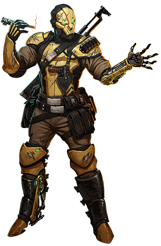

Gank
gank
Special Abilities: Ganks begin the game with one rank in Coercion or Vigilance. They still may not train Coercion or Vigilance above rank 2 during character creation.
Cyborg: All Ganks are cyborgs, and each one often possesses several different cybernetic implants. A Gank begins play with up to two cybernetics (such as those on page 173 of the Edge of the Empire Core Rulebook or on page 106 of this book) that cost a total of up to 5,000 credits. If a character takes on additional Obligation for credits at character creation, he may apply these extra funds to the 5,000 credit budget to purchase cybernetics. Ganks have a cybernetic implant cap of 3 plus Brawn rating.
A mysterious species of mercenaries in the employ of the Hutts, the Ganks are among the most feared and bloodthirsty killers in Hutt Space. Clad from head to toe in high-tech battle armor, these faceless thugs and enforcers are rarely seen in the flesh by non-Ganks. The Ganks act as bounty hunters, assassins, and bodyguards for Hutts and others willing to pay the credits for their services and to condone their methods. They established a reputation for unparalleled brutality several thousand years ago during the infamous Gank Massacres, when they wiped out the whole Porporite species to protect Neimoidian rylltrading interests. Since then, the Ganks have solidified their position as some of the most dangerous guns for hire in the galactic underworld.
Beneath their armor and cybernetics, Ganks are powerfully built, carnivorous bipeds with fur ranging in color from golden yellow to a mix of dark brown to red. Their snarling visages and beady eyes give them a dangerous, predatory appearance. Aggressive and belligerent, Ganks are known to have short tempers and few scruples, though they are strongly protective of their own kind. Cybernetics are such an important element of Gank society that they are virtually a part of their physiology, with every Gank having at least a few different implants or prosthetics.
Militaristic and warlike, Gank society is highly regimented and organized into familial packs, sometimes not so inappropriately referred to as murders. While not readily apparent to outsiders, Ganks conform to a strict hierarchy among themselves, with alphas—often the most experienced, veteran warriors—directing packs of their fellows. Ganks rarely operate independently, instead preferring to coordinate with other Ganks in small groups. Ganks are masters of ambush and squad tactics, functioning with an efficiency and lethality rarely seen outside of elite units. When forced to work with other, less disciplined species, Ganks frequently become frustrated by their disordered approach to combat.
Ganks often take trophies from their foes, a habit that has garnered them the reputation of being thieves as well as killers. Certainly, many Ganks are prone to looting their victims’ bodies, to claim tokens that show the quality and number of foes they have slain. Even amongst Ganks who do not lead a life of violent crime, trophy-taking is often a culturally important practice.
The homeworld of the Ganks is unknown. Many suspect that they originally hail from a planet somewhere within the Bootana Hutta itself, or possibly from a world hidden within the dense, radioactive clouds of the Oktos Nebula. Whatever the case may be, most Ganks can be found working for the Hutts within the vertical cities of Nar Shaddaa.
While Ganks have their own language, it is completely unknown to non-Ganks, as it is almost never spoken out loud. Ganks prefer to communicate silently among themselves via their cybernetic cornlinks. Most Ganks also speak at least some Basic and are generally fluent in Huttese
Ganks live on the edge of the fringe, and they are rarely a welcome sight among “civilized” society. The Hutts are known to enlist small armies of Ganks when in need of professional mercenaries, in addition to engaging smaller groups for special contracts. While most Ganks stick closely to their packs, an individual occasionally goes rogue, becoming a lone hunter. This most often occurs when the sole survivor of a pack refuses to join another pack. These solitary Ganks often become obsessed with avenging the deaths of their pack members, spending years, if necessary, to track and hunt those responsible.
Few species in the galaxy modify themselves with cybernetics as readily as the Ganks. It is completely unknown for an adult Gank to have eschewed all implants; Ganks commonly have several. Like so much about the Ganks, the reason for their obsession with altering their bodies with technology is a mystery, but it undoubtedly aids them in their mercenary professions.
Among the Ganks, more cybernetics means greater prestige, and highly successful veterans are often more machine and wire than flesh and bone. Particularly well-augmented Ganks are dangerous foes, as their strength, speed, and reflexes have been artificially boosted to vastly superhuman levels. Such is their obsession with cybernetic technology that Ganks will accept contracts offering payment in high-tech implants and artificial limbs in lieu of gold or credits. This reliance on technology does have one particularly notable drawback—Ganks are unusually susceptible to ionization weaponry, which can effectively shut down the cybernetic portions of their bodies. Because of this, Ganks rarely utilize ionization blasters and grenades, and they often find being shot at by such weapons more disconcerting than blaster fire.